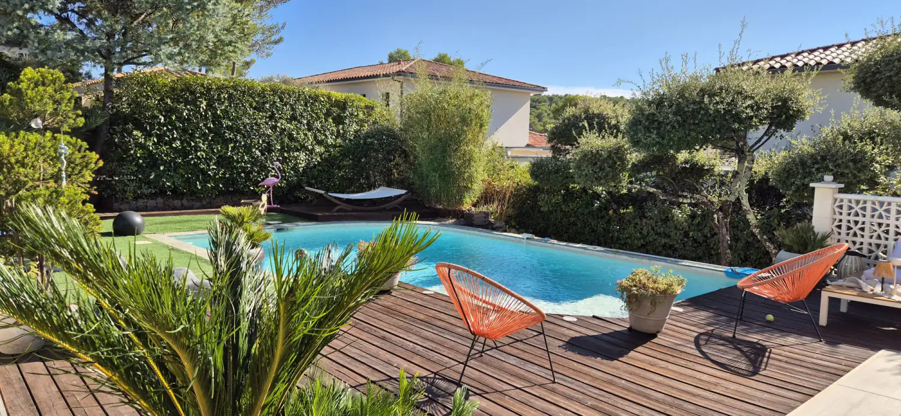

Aménagement minéral
Allées, cours, paillages minéraux, pas japonais en ardoise, béton désactivé, bordures acier.

AccueilAbords de piscine & terrasses
Saint-Cyr Services
Plages de piscine, terrasses en bois ou carrelées, écrans de verdure, passage entre la maison et le bassin. C’est le coin du jardin où on marche pieds nus, et le plus souvent mouillé. Le sol doit tenir compte de ça.
La prestation
La pente part vers l’extérieur du bassin, jamais vers lui. Sinon la pluie et les éclaboussures ramènent la terre dans l’eau. Le revêtement, on le choisit pour ce qu’il accroche sous un pied nu mouillé. Et en teinte claire là où le soleil tape : un carrelage foncé devient impraticable en plein après-midi.
La terrasse, les massifs et les écrans arrivent après. On regarde aussi les trajets. Où vous posez les serviettes, par où vous allez chercher un verre, où se range le robot, comment on rejoint le local technique sans traverser la plage. Quand c’est bien placé, personne ne fait de détour.

Le détail
Chaque poste se commande seul. Juste la terrasse, juste un écran végétal, ou tous les abords d’un coup.
Réalisations
Photos prises sur place, une fois le chantier fini. Cliquez pour agrandir.
Questions fréquentes
La couleur compte autant que le matériau. Un carrelage foncé ou un béton teinté sombre emmagasine la chaleur toute la journée. Le bois reste le plus tempéré sous le pied, une pierre ou un béton clair s’en approche. On regarde aussi l’exposition. Sur une plage plein sud sans ombre, on prévoit un arbre ou une pergola du côté où vous marchez le plus.
Le bois est doux au pied et rattrape les niveaux avec les plots réglables : c’est ce qu’on pose sur les margelles rehaussées et autour des piscines hors-sol. Il grise, et demande un nettoyage annuel, un dégrisage, un saturateur si vous tenez à la teinte. Le carrelage ne bouge pas et se lave au jet. Il faut juste qu’il soit vraiment antidérapant — un carrelage d’intérieur posé dehors, quelqu’un finit par tomber dessus. Souvent on mélange les deux : bois côté détente, dallage côté repas.
Tout ce qui perd beaucoup, et tout ce qui pique. Les arbres caducs plantés au vent du bassin remplissent le skimmer chaque automne, les pins et les mimosas lâchent aiguilles et fleurs en continu, les graminées à plumeaux finissent au fond de l’eau. Les cactées et les agaves n’ont rien à faire le long d’un passage pieds nus. On plante plutôt des persistants qui perdent peu, à bonne distance de la margelle. Et un paillage minéral, qui ne s’envole pas comme les écorces.
Pas en montant une haie sur tout le tour, en tout cas. Depuis la plage, on repère les deux ou trois fenêtres qui gênent vraiment. On ne masque que ces angles-là : un sujet bien placé, un écran sur quelques mètres, une haie taillée avec des arbustes plus libres derrière. Le reste du tour reste ouvert, et il y a beaucoup moins de mètres de haie à tailler chaque année.
Aller plus loin
Un abord de piscine touche à tout le reste : le sol, la taille, la pelouse, les plantations.
Allées, cours, paillages minéraux, pas japonais en ardoise, béton désactivé, bordures acier.

Haies au cordeau, oliviers en nuage, arbres fruitiers, palmiers, taille en hauteur.

Gazon semé, en plaques ou synthétique, avec la préparation de sol et l’arrosage.

Massifs méditerranéens, haies persistantes, potagers, grands sujets posés au camion-grue.

Tonte, taille, débroussaillage, désherbage, feuilles. Déchets verts emportés.
Le déplacement et le devis ne coûtent rien. Un coup de fil suffit pour savoir si c’est faisable, et quand.